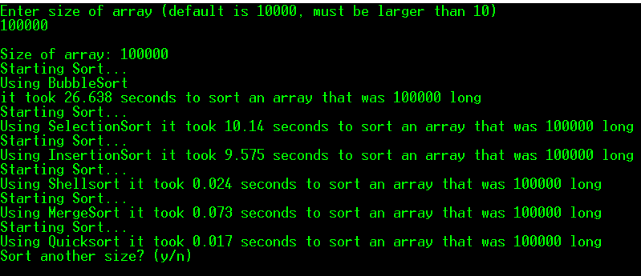
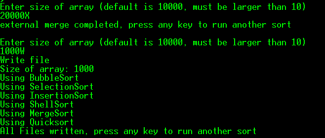
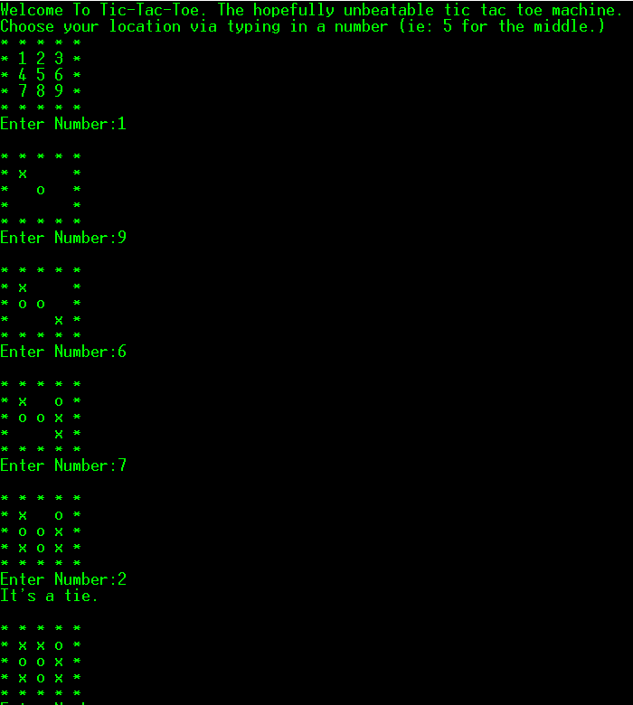

This assignment was using different sorting algorithms, specifically Bubble Sort, Insertion Sort, Merge Sort, Quick Sort, Selection sort, and most fun of all, External Merge Sort. When you run the program it asks you to enter a size, using that size it will run through all the mentioned sorts except External Merge, which can be triggered by entering 20000X. If you enter 1000W it will write all the sorted arrays to .csv files allowing you to view them sorted. They are on located on github with the project.

The algorithms all fell within or slightly above the expected sorting speed. Below you can see the output of running external merge sort, followed by the writing of all files.

The external merge runs in such a quick period due to closing files after it was completed, .close() takes a fair bit of time, so it slows down the sort by seconds. If you look at the code below only three of the sorts are found, the rest are on github.
/*
Bubble sort is a simple sorting algorithm. This sorting algorithm is
comparison-based algorithm in which each pair of adjacent elements is
compared and the elements are swapped if they are not in order.
*/
void bubbleSort(int array[], int size) {
int outer, inner;
for (outer = size - 1; outer > 0; outer--) {
for (inner = 0; inner outer; inner++) {
if (array[inner] > array[inner + 1]) {
int temp = array[inner];
array[inner] = array[inner + 1];
array[inner + 1] = temp;
}
}
}
}
/*
The selection sort is a combination of searching and sorting. During each pass,
the unsorted element with the smallest (or largest) value is moved to its proper
position in the array. The number of times the sort passes through the array
is one less than the number of items in the array.
*/
void selectionSort(int array[], int size) {
int outer, inner, min;
for (outer = 0; outer < size - 1; outer++) {
min = outer;
for (inner = outer + 1; inner < size; inner++) {
if (array[inner] < array[min]) {
min = inner;
}
}
int temp = array[outer];
array[outer] = array[min];
array[min] = temp;
}
}
/*
The selection sort is a combination of searching and sorting.
During each pass, the unsorted element with the smallest (or largest)
value is moved to its proper position in the array. The number of times
the sort passes through the array is one less than the number of items in the array.
cforbeginners.com/insertionsort.html
*/
void insertionSort(int array[], int size) {
int i, j, temp;
for (i = 1; i < size; i++) {
j = i;
while (j > 0 && array[j - 1] > array[j]) {
temp = array[j];
array[j] = array[j - 1];
array[j - 1] = temp;
j--;
}
}
}
TicTacToe
Tictactoe was made in c++, it had an unbeatable AI, including a number of tests done by the instructor, David Russell. The AI, was a script that went through series of moves based on how you played.
The AI was able to stop forks, of all sorts, and was also able to play offensively while playing, so it would beat the player if not presented with a fork. Below is a full game played, where the AI stoped a fork from happening by playing two in a row.

Below in the code section is the full logic of the 'AI'.
void computer(string Board[][5], int move) {
if (Board[3][1] == "x" && Board[3][3] == "x" && Board[3][2] == " ") {
Board[3][2] = "o";
}else if (Board[2][3] == "x" && Board[2][2] == "x" && Board[2][1] == " ") {
Board[2][1] = "o";
}else if (Board[3][1] == "x" && Board[3][3] == "x" && Board[3][2] == " ") {
Board[3][2] == "o";
}else if (Board[3][3] == "x" && Board[2][3] == "x" && Board[1][3] == " ") {
Board[1][3] = "o";
}else if (Board[1][1] == "x" && Board[1][2] == "x" && Board[1][3] == " ") {
Board[1][3] = "o";
}else if (Board[2][1] == "x" && Board[2][2] == "x" && Board[2][3] == " ") {
Board[2][3] = "o";
}else if (Board[3][1] == "x" && Board[3][2] == "x" && Board[3][3] == " ") {
Board[3][3] = "o";
}else if (Board[1][2] == "x" && Board[1][3] == "x" && Board[1][1] == " ") {
Board[1][1] = "o";
}else if (Board[1][3] == "x" && Board[1][1] == "x" && Board[1][2] == " ") {
Board[1][2] = "o";
}else if (Board[1][1] == "x" && Board[3][3] == "x" && Board[2][2] == " ") {
Board[2][2] = "o";
}else if (Board[1][1] == "x" && Board[2][2] == "x" && Board[3][3] == " ") {
Board[3][3] = "o";
}else if (Board[2][2] == "x" && Board[3][3] == "x" && Board[1][1] == " ") {
Board[1][1] = "o";
}else if (Board[1][1] == "x" && Board[2][1] == "x" && Board[3][1] == " ") {
Board[3][1] = "o";
}else if (Board[1][1] == "x" && Board[3][1] == "x" && Board[2][1] == " ") {
Board[2][1] = "o";
}else if (Board[2][1] == "x" && Board[3][1] == "x" && Board[1][1] == " ") {
Board[1][1] = "o";
}else if (Board[3][1] == "x" && Board[3][2] == "x" && Board[3][3] == " ") {
Board[3][3] = "o";
}else if (Board[3][3] == "x" && Board[3][2] == "x" && Board[3][1] == " ") {
Board[3][1] = "o";
}else if (Board[1][2] == "x" && Board[2][2] == "x" && Board[3][2] == " ") {
Board[3][2] = "o";
}else if (Board[1][3] == "x" && Board[2][2] == "x" && Board[3][1] == " ") {
Board[3][1] = "o";
}else if (Board[2][2] == "x" && Board[2][1] == "x" && Board[3][1] == " ") {
Board[3][1] = "o";
}else if(Board[1][3] == "x" && Board[3][3] == "x" && Board[2][3] == " ") {
Board[2][3] = "o";
}else if(Board[1][3] == "x" && Board[3][3] == "x" && Board[2][3] == " ") {
Board[2][3] = "o";
}else if (Board[1][2] == "x" && Board[3][2] == "x" && Board[2][2] == " ") {
Board[2][2] = "o";
}else if (Board[1][1] == "x" && Board[3][1] == "x" && Board[2][1] == " ") {
Board[2][1] = "o";
}else if (Board[1][3] == "x" && Board[2][3] == "x" && Board[3][3] == " ") {
Board[3][3] = "o";
}else if (Board[1][3] == "x" && Board[2][2] == "x" && Board[3][1] == " ") {
Board[3][1] = "o";
}else if (Board[2][2] == "x" && Board[3][1] == "x" && Board[1][3] == " ") {
Board[1][3] = "o";
}else if (Board[1][3] == "x" && Board[3][1] == "x" && Board[2][2] == " ") {
Board[2][2] = "o";
}else if (Board[1][1] == "x" && move == 1 || Board[1][3] == "x" && move == 1 || Board[3][1] == "x" && move == 1 || Board[3][3] == "x" && move == 1) {
Board[2][2] = "o";
}
else if (Board[1][1] == "x" && Board[3][3] == "x" && move == 2 || Board[3][1] == "x" && Board[1][3] == "x" && move == 2) {
Board[2][1] = "o";
option = 1;
if (Board[2][3] == "x" && option == 1 && move == 3) {
if (Board[1][3] != " ") {
Board[3][2] = "o";
}
else { Board[1][3] = "o"; }
}
}else if (Board[3][1] == "o" && Board[3][3] == "o" && Board[3][2] == " ") {
Board[3][2] = "o";
}else if (Board[2][3] == "o" && Board[2][2] == "o" && Board[2][1] == " ") {
Board[2][1] = "o";
}else if (Board[3][1] == "o" && Board[3][3] == "o" && Board[3][2] == " ") {
Board[3][2] == "o";
}else if (Board[3][3] == "o" && Board[2][3] == "o" && Board[1][3] == " ") {
Board[1][3] = "o";
}else if (Board[1][1] == "o" && Board[1][2] == "o" && Board[1][3] == " ") {
Board[1][3] = "o";
}else if (Board[2][1] == "o" && Board[2][2] == "o" && Board[2][3] == " ") {
Board[2][3] = "o";
}else if (Board[3][1] == "o" && Board[3][2] == "o" && Board[3][3] == " ") {
Board[3][3] = "o";
}else if (Board[1][2] == "o" && Board[1][3] == "o" && Board[1][1] == " ") {
Board[1][1] = "o";
}else if (Board[1][3] == "o" && Board[1][1] == "o" && Board[1][2] == " ") {
Board[1][2] = "o";
}else if (Board[1][1] == "o" && Board[3][3] == "o" && Board[2][2] == " ") {
Board[2][2] = "o";
}else if (Board[1][1] == "o" && Board[2][2] == "o" && Board[3][3] == " ") {
Board[3][3] = "o";
}else if (Board[2][2] == "o" && Board[3][3] == "o" && Board[1][1] == " ") {
Board[1][1] = "o";
}else if (Board[1][1] == "o" && Board[2][1] == "o" && Board[3][1] == " ") {
Board[3][1] = "o";
}else if (Board[1][1] == "o" && Board[3][1] == "o" && Board[2][1] == " ") {
Board[2][1] = "o";
}else if (Board[2][1] == "o" && Board[3][1] == "o" && Board[1][1] == " ") {
Board[1][1] = "o";
}else if (Board[3][1] == "o" && Board[3][2] == "o" && Board[3][3] == " ") {
Board[3][3] = "o";
}else if (Board[3][3] == "o" && Board[3][2] == "o" && Board[3][1] == " ") {
Board[3][1] = "o";
}else if (Board[1][2] == "o" && Board[2][2] == "o" && Board[3][2] == " ") {
Board[3][2] = "o";
}else if (Board[1][3] == "o" && Board[2][2] == "o" && Board[3][1] == " ") {
Board[3][1] = "o";
}else if (Board[2][2] == "o" && Board[2][1] == "o" && Board[3][1] == " ") {
Board[3][1] = "o";
}else if (Board[1][3] == "o" && Board[3][3] == "o" && Board[2][3] == " ") {
Board[2][3] = "o";
}else if (Board[1][3] == "o" && Board[3][3] == "o" && Board[2][3] == " ") {
Board[2][3] = "o";
}else if (Board[1][2] == "o" && Board[3][2] == "o" && Board[2][2] == " ") {
Board[2][2] = "o";
}else if (Board[1][1] == "o" && Board[3][1] == "o" && Board[2][1] == " ") {
Board[2][1] = "o";
}else if (Board[1][3] == "o" && Board[2][3] == "o" && Board[3][3] == " ") {
Board[3][3] = "o";
}else if (Board[1][3] == "o" && Board[2][2] == "o" && Board[3][1] == " ") {
Board[3][1] = "o";
}else if (Board[2][2] == "o" && Board[3][1] == "o" && Board[1][3] == " ") {
Board[1][3] = "o";
}else if (Board[1][3] == "o" && Board[3][1] == "o" && Board[2][2] == " ") {
Board[2][2] = "o";
}else if (Board[2][2] == "x" && move == 1) {
Board[1][1] = "o";
}else if (move >= 1) {
if (Board[1][1] == " ") {
Board[1][1] = "o";
}else if (Board[3][3] == " ") {
Board[3][3] = "o";
}else if (Board[1][3] == " ") {
Board[1][3] = "o";
}else if (Board[3][1] == " ") {
Board[3][1] = "o";
}else if (Board[1][2] == " ") {
Board[1][2] = "o";
}else if (Board[1][3] == " ") {
Board[1][3] = "o";
}else if (Board[2][1] == " ") {
Board[2][1] = "o";
}else if (Board[2][2] == " ") {
Board[2][2] = "o";
}else if (Board[2][3] == " ") {
Board[2][3] = "o";
}else if (Board[3][2] == " ") {
Board[3][2] = "o";
}else if (Board[3][3] == " ") {
Board[3][3] = "o";
}
}//end
}//end function
Fraction Calculator
The fraction calculator involved overloading the ios stream, and various other functions, such as +, -, <, and >. The program highlighted regex, and overloading operators to complete the assignment.
The Calculator could take in two fractions, including whole numbers and do operations on them, such as addition, subtraction, multiplication and division.